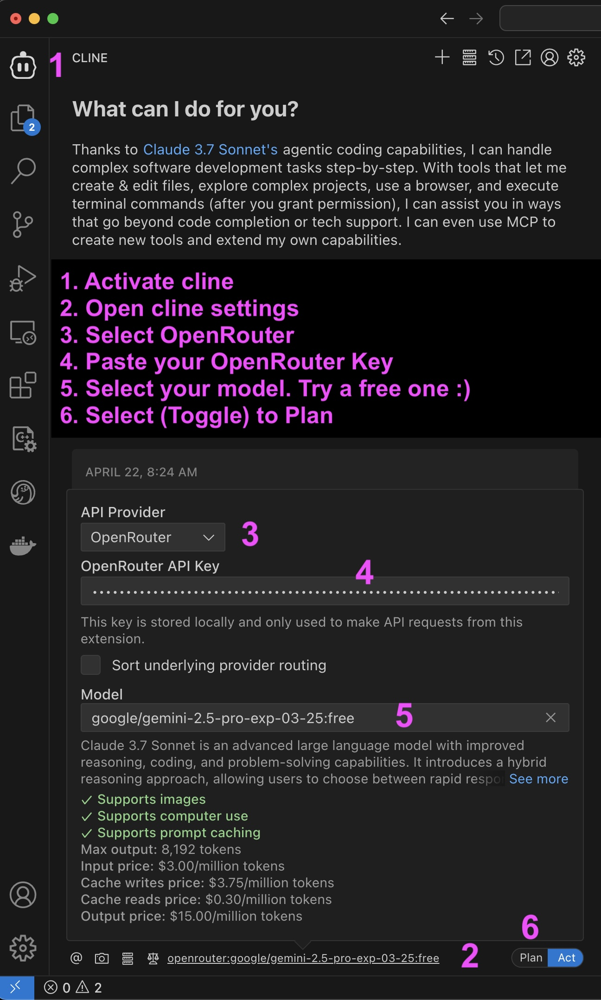

VS Code, Cline, and OpenRouter: Your First AI Adventure! ✨
Hello and welcome! This guide will walk you through using VS Code with the Cline extension and OpenRouter to explore the exciting world of AI agents. Don't worry if you've never coded before – we'll take it one step at a time.
What You'll Need to Get Started 🚀
- A Computer: Any computer (Mac, Windows, or Linux) will work perfectly.
- Internet Access: You'll need this to download a couple of free tools.
- A Smile and a Can-Do Attitude! Learning is fun, and we're here to help.
Step 1: Getting VS Code Ready 💻
Visual Studio Code (VS Code) is like a super-smart notepad for writing code. It's free, and we'll use it to talk to AI!
- Download VS Code: Think of this as getting the app. Go to the VS Code website (https://code.visualstudio.com/) using your internet browser (like Chrome, Safari, or Firefox). Find the big button to download the right version for your computer (Windows, Mac, or Linux).
- Install VS Code: This is like setting up the app on your computer.
- Windows: Double-click the file you downloaded. A window will pop up – just follow the instructions, clicking "Next" a few times and then "Install".
- Mac: Double-click the downloaded file. It will open a window. Drag the VS Code icon into your "Applications" folder.
- Linux: The installation process can vary depending on your distribution. Follow the instructions on the VS Code website for your specific system.
- Launch VS Code: Find VS Code in your computer's menu (usually in "Applications" on a Mac or the "Start" menu on Windows) and click it to open. You should see a welcome screen! 🎉
Step 2: Adding Cline to VS Code (The Magic Wand! ✨)
Cline is like a magic wand that lets VS Code talk to AI. Here's how to add it:
- Open VS Code: If you closed VS Code, open it again.
- Find the Extensions Button: Look for a square icon made of smaller squares on the left side of VS Code. It's called the "Extensions" view. You can also press
Ctrl+Shift+X (or Cmd+Shift+X on a Mac) to open it.
- Search for Cline: In the search box at the top of the Extensions view, type "Cline".
- Install Cline: You'll see the Cline extension in the search results. It should be the one with the Cline logo. Click the "Install" button next to it.
- Reload VS Code: After Cline installs, VS Code will ask you to "Reload" the window. This is like restarting the app to make sure Cline is ready to go. Click the "Reload" button.
Step 3: Connecting to OpenRouter (The AI Brain! 🧠)
OpenRouter is like a gateway to many different AI brains. We need to connect Cline to OpenRouter so it can ask questions and get answers.
- Create an OpenRouter Account: Think of this as getting a key to the AI world. Open your internet browser and go to the OpenRouter website (https://openrouter.ai/). Click on "Sign Up" and follow the instructions to create a free account.
- Get Your Secret API Key: Once you're logged in, hover over your profile image/icon (top right) and select "API Keys" or "Keys". This is where you'll create your secret key. Click the button to generate a new API key and give it a name related to your project or use case.
- Important: This key is like a password, so keep it safe and don't share it with anyone!
- Configure Cline with OpenRouter: Now, we need to set up Cline to use OpenRouter. Follow these steps:

- Activate Cline: Click on the Cline icon in the sidebar of VS Code.
- Open Cline Settings: Look for the settings gear icon in the Cline panel.
- Select OpenRouter: From the API Provider dropdown, select "OpenRouter".
- Paste your OpenRouter Key: Enter your OpenRouter API key in the field provided.
- Select your model: Choose a model from the dropdown menu. If you're just starting, try one of the free models.
- Select (Toggle) to Plan: This sets up your interaction mode with the AI.
Step 4: Asking Your First Question! ❓
Time to see if everything is working! We'll ask a simple question and see if Cline can get an answer from OpenRouter.
- Create a New File: In VS Code, click on the message input box on the bottom left of the window. (note
- Write Your Question: Now, type the following question into the message input box: What is the capital of France?
- Ask Cline to Answer: Click the send icon
- See the Answer! Cline will send your question to OpenRouter, and OpenRouter will use AI to find the answer. The response will appear in the message thread above. It should say something like: "The capital of France is Paris." 🎉
You Did It! 🎉
Give yourself a pat on the back! You've successfully set up VS Code, installed Cline, connected to OpenRouter, and asked your first AI question. You're officially an AI explorer!
What's Next? 🚀
Now the real fun begins! Here are a few ideas to keep learning:
- Ask More Questions! Try asking Cline different questions. What happens if you ask it to write a poem? Or translate a sentence into another language?
- Explore Different AI Models: OpenRouter gives you access to lots of different AI brains. See if you can figure out how to switch between them and compare their answers.
- Read the Cline Manual: Cline has many more tricks up its sleeve! Check out the documentation to learn about all the cool things it can do.
Keep exploring, keep asking questions, and most importantly, have fun!